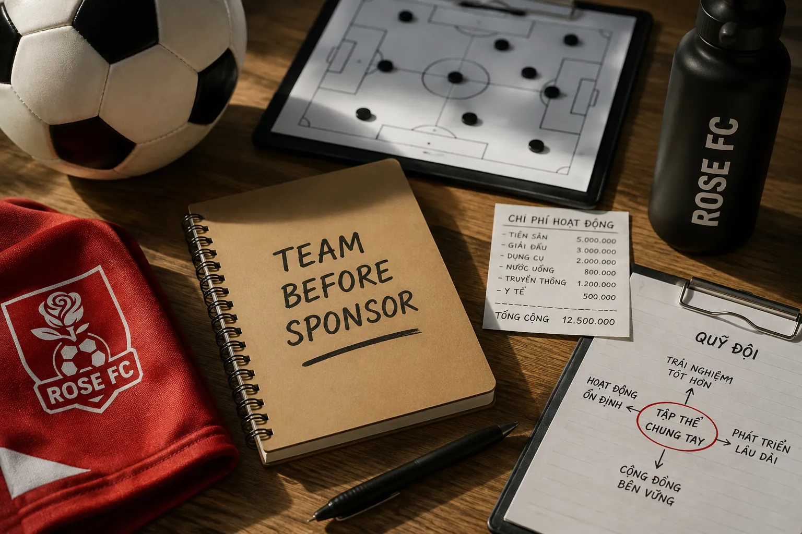
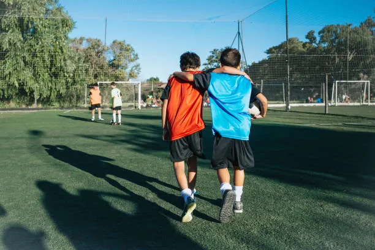

Vì sao một đội bóng cần biết tự nuôi mình trước khi cần người khác nuôi cùng?
Tài trợ có thể giúp một CLB phát triển nhanh hơn. Nhưng trước đó, chính tập thể phải đủ trách nhiệm để giữ cho CLB tồn tại.

Minh hoạ · Rose Newsroom
Một đội bóng có thể bắt đầu từ đam mê, nhưng để tồn tại lâu dài, đam mê thôi là chưa đủ.
Mỗi buổi tập đều có chi phí. Tiền sân, bóng, dụng cụ, nước uống, giải đấu, trang phục, truyền thông, y tế và rất nhiều khoản nhỏ phía sau một trận đấu đều cần được chi trả.
Vì vậy, trước khi đặt câu hỏi “Ai sẽ tài trợ cho chúng ta?”, có lẽ một đội bóng nên tự hỏi:
Tự nuôi mình không có nghĩa là không cần nhà tài trợ
Một CLB có nhà tài trợ là điều tốt.
Nhà tài trợ có thể giúp đội bóng có trang phục tốt hơn, tham dự nhiều giải đấu hơn, cải thiện truyền thông, trang thiết bị, y tế, huấn luyện và rất nhiều điều mà nguồn lực nội bộ khó có thể đáp ứng ngay.
Nhưng có một sự khác biệt khá lớn giữa “được tài trợ để phát triển” và “phải có tài trợ mới tồn tại được”.
Nếu một đội bóng chỉ có thể tập luyện khi có người trả tiền sân, chỉ có thể thi đấu khi có người đóng lệ phí giải và chỉ có thể hoạt động khi một cá nhân liên tục bỏ tiền ra duy trì, thì nền tảng của đội bóng đó vẫn còn rất mong manh.
Nhà tài trợ nên là người giúp CLB đi xa hơn, chứ không nên trở thành chiếc máy thở giúp CLB tồn tại qua từng tháng.
Không nhất thiết phải có một “ông bầu” để duy trì đội bóng
Trong bóng đá phong trào, chúng ta thường quen với hình ảnh một người đứng ra lo gần như mọi thứ cho đội.
Người đó trả tiền sân, tiền giải, mua bóng, mua nước, đôi khi cả trang phục và các chi phí khác.
Mô hình này có thể hoạt động rất tốt nếu người đứng đầu có đủ nguồn lực và muốn duy trì lâu dài. Nhưng nó cũng tạo ra một rủi ro lớn: toàn bộ sự tồn tại của đội bóng phụ thuộc vào một người.
Rose FC muốn đi theo một hướng khác.
Không phải một cá nhân “nuôi” đội bóng, mà chính tập thể cùng góp phần duy trì nơi mà mình đang chơi bóng.

Nếu 20 người cùng hưởng một sân tập, cùng sử dụng dụng cụ, cùng tham gia giải đấu và cùng nhận được những trải nghiệm từ CLB, thì việc chia sẻ một phần chi phí vận hành cũng là một phần của trách nhiệm tập thể.
Điều quan trọng không nằm ở số tiền lớn hay nhỏ.
Điều quan trọng là mỗi thành viên hiểu rằng:
Quỹ đội không đơn giản là “đóng tiền”
Một quỹ đội được tổ chức đúng cách không nên được hiểu đơn giản là khoản thu hàng tháng.
Nó là cách một tập thể tạo ra nguồn lực chung cho những việc mà tất cả mọi người đều hưởng lợi.
Tiền sân, bóng, dụng cụ và những chi phí chung giúp lịch sinh hoạt được duy trì ổn định.
Giải đấu, trang phục, truyền thông và các hoạt động chung làm trải nghiệm thành viên tốt hơn.
CLB không phải chờ một cá nhân hoặc nhà tài trợ mỗi khi cần thực hiện một kế hoạch nhỏ.
Một nền tài chính cơ bản ổn định cho phép CLB suy nghĩ xa hơn thay vì chỉ giải quyết từng tuần.
Một phần quỹ có thể được dùng cho dụng cụ tập luyện. Một phần cho hoạt động chung. Một phần cho giải đấu, truyền thông hoặc những chi phí phát sinh trong quá trình vận hành.
Khi nguồn quỹ đủ ổn định, CLB cũng có thể chủ động hơn trong kế hoạch của mình.
Không phải mỗi lần muốn tham dự một giải lại bắt đầu đi tìm người tài trợ. Không phải mỗi khi cần mua dụng cụ lại chờ một cá nhân đứng ra trả. Và cũng không phải mỗi khi thiếu một khoản tiền thì hoạt động của cả đội bị gián đoạn.
Đó chính là giá trị lớn nhất của việc tự chủ tài chính ở mức cơ bản: CLB có quyền chủ động với chính hoạt động của mình.
Nhưng đóng góp phải đi cùng minh bạch
Khi một tập thể cùng đóng góp tiền, minh bạch không còn là lựa chọn. Nó là trách nhiệm.
Thành viên cần biết quỹ đang có bao nhiêu, đã chi vào việc gì và những khoản chi đó phục vụ cho hoạt động chung như thế nào.
Một CLB không thể nói về trách nhiệm tập thể nếu cách quản lý tài chính lại không rõ ràng.
Vì vậy, việc xây dựng quỹ đội cũng đồng nghĩa với việc xây dựng một hệ thống quản lý tốt hơn: có ghi nhận, có báo cáo và có nguyên tắc sử dụng.
Niềm tin của thành viên đối với CLB không chỉ được tạo ra trên sân bóng. Nó còn được tạo ra từ những điều rất nhỏ phía sau sân bóng.
Tài trợ vẫn rất quan trọng — nhưng nên đến sau một nền tảng ổn định
Một đội bóng biết tự duy trì mình không có nghĩa là từ chối tài trợ.
Ngược lại, đó có thể là một đội bóng hấp dẫn hơn đối với nhà tài trợ.
Bởi khi một thương hiệu nhìn vào một CLB có lịch hoạt động ổn định, thành viên có trách nhiệm, tài chính nội bộ rõ ràng, truyền thông đều đặn và một cộng đồng thực sự tồn tại, họ biết rằng mình đang đầu tư vào một tổ chức có nền tảng.
Khi đó, tiền tài trợ không còn phải dùng để “cứu” đội bóng. Nó có thể được dùng để nâng cấp đội bóng: tốt hơn về trang phục, giải đấu, đào tạo, trải nghiệm cầu thủ và xa hơn nữa là những dự án dài hạn.
Một CLB bền vững bắt đầu từ những người đang ở bên trong nó
Không có mô hình nào hoàn hảo.
Có những đội bóng tồn tại nhờ một nhà tài trợ lớn. Có những đội được một cá nhân đầu tư lâu dài. Và cũng có những CLB được xây dựng từ chính sự đóng góp của cộng đồng thành viên.
Rose FC lựa chọn từng bước xây dựng khả năng tự duy trì từ bên trong.
Không phải để chứng minh rằng CLB không cần sự giúp đỡ.
Mà để khi một ngày nào đó có người muốn đồng hành, Rose FC không đến với họ bằng câu hỏi:
Mà bằng một câu chuyện khác:
“Chúng tôi đã xây được một tập thể có thể tự đứng bằng đôi chân của mình. Nếu đồng hành cùng nhau, chúng ta có thể đưa nó đi xa hơn.”
Đó cũng là ý nghĩa của việc tự nuôi mình trước khi tìm người khác nuôi cùng.